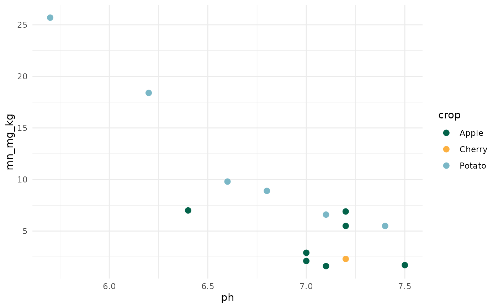
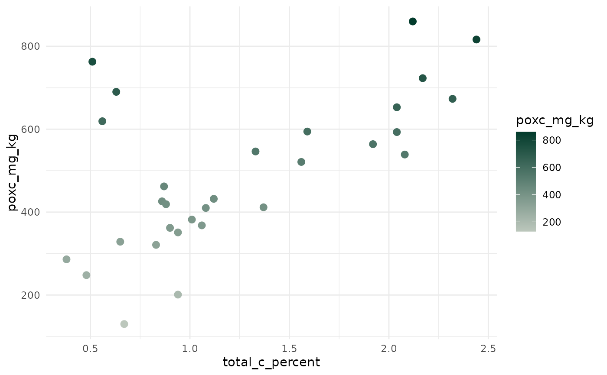

Provides compatibility with ggplot2.
Usage
washi_scale(
palette = "color_blind",
aesthetics = c("color", "fill"),
alpha = 1,
reverse = FALSE,
discrete = TRUE,
...
)Arguments
- palette
Character name of palette in washi_pal. See
names(washi_pal)for a list of available palettes.- aesthetics
Character string or vector of character strings listing the name(s) of the aesthetic(s) that this scale works with. Defaults to c("color", "fill"), which applies the palette to both the color and fill aesthetics at the same time.
- alpha
Numeric transparency level of the color from 0 to 1. Default is 1 (not transparent).
- reverse
Boolean indicating whether the palette should be reversed. Default is FALSE.
- discrete
Boolean indicating whether color aesthetic is discrete or not. Default is TRUE.
- ...
Additional arguments passed to discrete_scale() or scale_color_gradientn(), used respectively when discrete is TRUE or FALSE
See also
Other ggplot2 functions:
washi_theme()
Examples
library(ggplot2)
# Discrete scale
example_data_wide |>
subset(crop %in% c("Apple", "Cherry", "Potato")) |>
ggplot(aes(x = ph, y = mn_mg_kg, color = crop)) +
geom_point(size = 2.5) +
theme_minimal() +
washi_scale()

# Continuous scale
example_data_wide |>
ggplot(aes(x = total_c_percent, y = poxc_mg_kg, color = poxc_mg_kg)) +
geom_point(size = 2.5) +
theme_minimal() +
washi_scale("green_gradient", reverse = TRUE, discrete = FALSE)
